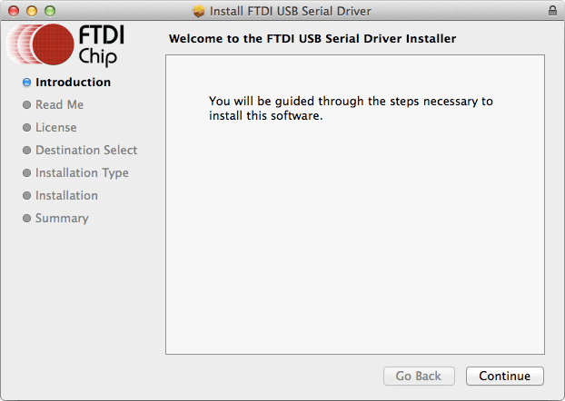

Set Up Your Computer - Mac
Instructions for the Xadow Wearables Kit for Intel® Edison on Mac
This setup document will guide you through preparing your computer with Mac-specific drivers required for the Xadow Wearables Kit for Intel® Edison.
Are you using the Intel® Edison Kit for Arduino expansion board?
You do not need to go through this step. This document is for installing serial drivers for the Xadow programmer board. Continue to Shell Access - Mac.
Table of contents
Download and install FTDI VCP serial drivers
FTDI Virtual COM port (VCP) drivers allow your Mac to communicate with the Intel® Edison over USB serial when the Intel® Edison is attached to the Xadow expansion board and programmer.
- Get the latest FTDI VCP driver installer.
Hackathon attendees:
- On the USB key: files → Mac
- Copy FTDIUSBSerialDriver_version.dmg to your computer.
Online option:
- Visit ftdichip.com/Drivers/VCP.htm.
- Scroll down to the “Currently Supported VCP Drivers” table.
-
Click the version number link in the “x64 (64-bit)” column for your Mac OS version to download FTDIUSBSerialDriver_version.dmg to your computer.
-
Click on FTDIUSBSerialDriver_version.dmg to extract the installer package.
-
In the new Finder window, click on FTDIUSBSerial.pkg to start the installer.
- Follow the installation wizard prompts. Click “Next” where needed.

-
Click “Finish” to close the installation wizard.
-
Restart your Mac for driver changes to take effect. You must restart your computer for driver changes to take effect!
Next Steps
Gain command line access of your IoT board. Execute special Linux commands to configure your IoT board such as setting up Wi-Fi.